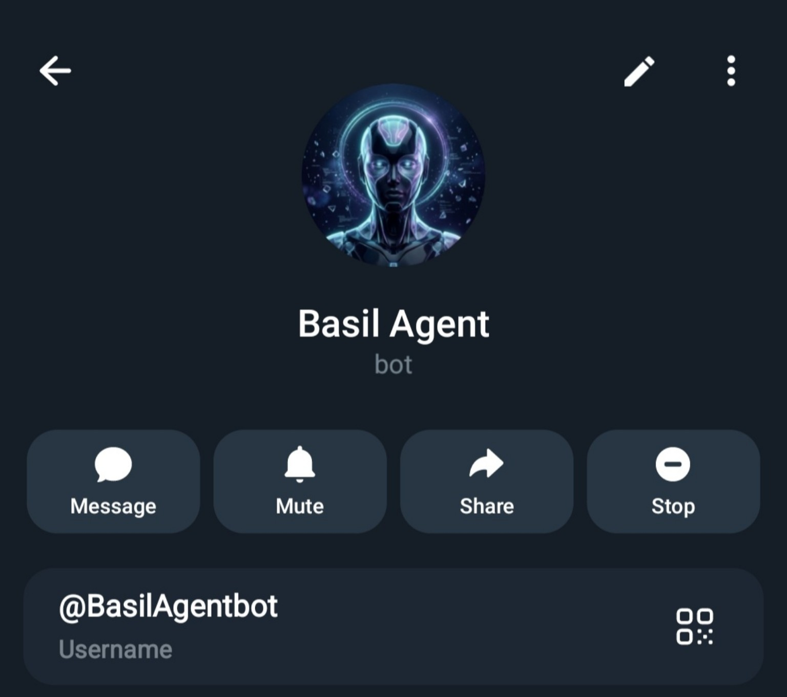

Basil Agent
A private Telegram AI operations operator built with Groq Llama-3.1-8B and strict human-in-the-loop safeguards for remote cloud VPS administration.
← Back to selected work
What problem needs solving?
Managing cloud VPS infrastructure on the go usually requires opening an SSH terminal on a laptop. Traditional AI agents granted unrestricted terminal execution introduce severe security vulnerabilities, potentially causing accidental service outages, configuration drift, or credential exposure.
Human-in-the-loop execution architecture
Architected Basil Agent as a disciplined Telegram cloud operations assistant with a strict two-stage verification barrier:
- Inference Engine: Powered by Groq Cloud API running ultra-low-latency Llama-3.1-8B reasoning for fast incident assessment.
- Two-Step Verification: System commands generated by the AI require an explicit approval token (
/rungenerates a single-use token,/approve [TOKEN]executes the command). - Filesystem & Credential Guard: Absolute blacklisting preventing access to SSH keys, root credentials, or environment files (
.env). - Daemon Supervision: Node.js process managed under systemd with automated crash restarts and immutable append-only audit logging.
Security governance & operational defense
Applied rigorous system boundaries to balance operator mobility with operational safety:
- Engineered fail-safe security protocol balancing operator mobility with strict infrastructure defense.
- Formalized audit logs tracking all AI-suggested commands, execution codes, and terminal output.
- Enabled high-speed devops management from a smartphone while traveling internationally without compromising root keys.
What to show the reviewer
The verified Telegram bot profile below confirms the registered public identity (@BasilAgentbot). In production, private credentials, tokens, and host IPs remain strictly confidential in accordance with operational security guidelines. The two-tier authorization model guarantees that no command executes without deliberate human confirmation.
What comes next?
Introducing granular role-based permissions, automated read-only health checks (disk space, memory pressure, service heartbeats), and encrypted Telegram webhook authentication.